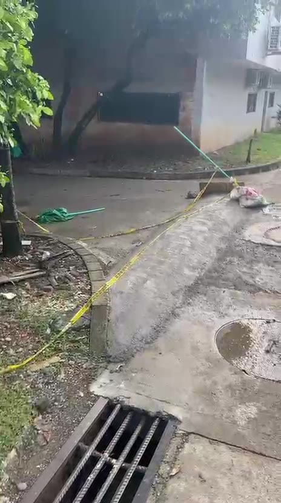
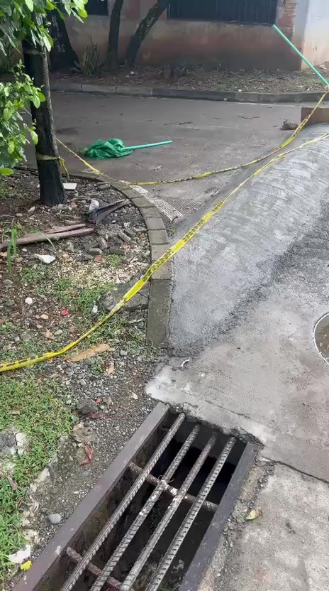
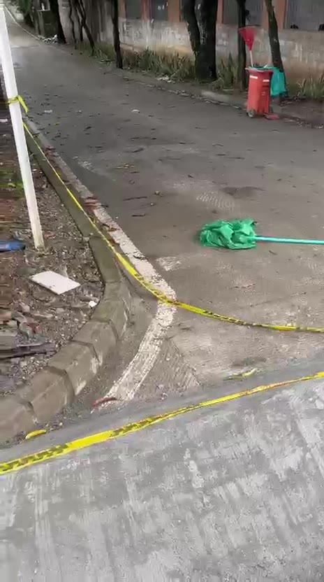
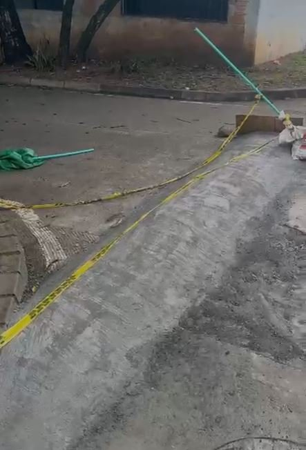

Tapa el camino del agua
La lluvia corría por la cuneta hasta el sumidero. Ahora choca contra el lomo y se devuelve. Con un aguacero de Caucasia, eso es agua dentro de la parroquia.
Colinas del Portal, Caucasia
Lo fundieron en plena esquina de la Parroquia El Divino Niño, pegado al sumidero. La parroquia no lo solicitó, y con cada aguacero el agua que antes se iba por la rejilla ahora se represa contra el templo.

Los vecinos amanecieron con el concreto fresco, la cinta de precaución y ningún letrero que dijera quién ordenó la obra ni con qué permiso.
Entendemos la preocupación que pudo motivarlo: por estas calles pasan jóvenes a velocidades exorbitantes y hacen piques. Ese problema es real y hay que atenderlo. Pero la solución no puede crear otro problema.
El resalto quedó en plena esquina, donde los carros y las motos giran, y justo al lado de la rejilla que recoge la lluvia de la cuadra. Un lomo de concreto en ese punto funciona como un dique: el agua que bajaba libre hacia el sumidero ahora se frena, se desvía y se acumula frente a la parroquia, que ya se inundaba con los aguaceros fuertes.
La Parroquia El Divino Niño no pidió esta obra. Al contrario, es la primera perjudicada. Y ni los vecinos de Colinas del Portal, ni los de Altos de San Juan, ni los de El Triángulo fueron consultados.
Hacemos pública esta denuncia para que quede como un mal ejemplo: en Caucasia no se deben hacer reductores de velocidad sin estudio, sin acto administrativo y sin el consentimiento de la comunidad.
Un reductor de velocidad bien hecho tiene estudio, acto administrativo, ubicación técnica, drenaje y señales. Este es el estado de lo que se construyó.
Las fotos salen del video ciudadano. Cualquiera puede ir a la esquina y comprobarlo.

La lluvia corría por la cuneta hasta el sumidero. Ahora choca contra el lomo y se devuelve. Con un aguacero de Caucasia, eso es agua dentro de la parroquia.

Quien voltea la esquina lo encuentra encima, sin verlo venir. Para una moto de noche o con el piso mojado, es un riesgo de caída, no una medida de seguridad.

Los piques se hacen en las rectas. Un solo lomo en la esquina no los detiene: los corre unos metros. Lo que sirve es control de tránsito y reductores bien diseñados donde el estudio lo indique.
En Colombia los reductores de velocidad tienen dueño, requisitos y manual. Esto es lo que dice la ley.
Solo los alcaldes o las secretarías de tránsito pueden poner reductores de velocidad o resaltos, y en zonas que presenten alto riesgo de accidentalidad. Un particular no puede fundir uno por su cuenta.
Es de obligatorio cumplimiento para toda entidad o persona que haga señalización vial. Define tipos de resalto, cómo se instalan, dónde se ubican y qué señales llevan.
En zonas residenciales la velocidad máxima es 30 km/h. Hacer cumplir ese límite a quienes hacen piques es tarea de las autoridades de tránsito.
Cualquier ciudadano puede exigir a la Alcaldía que diga quién ordenó la obra y con qué permiso. Deben responder en 15 días hábiles, y en 10 si lo pedido son documentos.
Esta página es una denuncia ciudadana, no un concepto jurídico. Si la autoridad demuestra que la obra tiene acto administrativo y estudio, igual queda en pie el reclamo por el drenaje y la ubicación.
Dirigidas a la Alcaldía de Caucasia y a su Secretaría de Tránsito, con copia a la Personería Municipal.
Firme, comparta y, si quiere ir más lejos, radique su propio derecho de petición. Entre más vecinos, más difícil de ignorar.
Su apoyo llega por WhatsApp al vecino que promueve la denuncia y se suma a la lista que se entregará con la petición.
Aviso de privacidad (Ley 1581 de 2012): su nombre y barrio solo se usan para la lista de firmantes de esta denuncia ante la Alcaldía de Caucasia. Nada se guarda en esta página. Puede pedir que lo retiren de la lista escribiendo al mismo WhatsApp.
Mándela a los grupos de Colinas del Portal, Altos de San Juan y El Triángulo. El mensaje ya va escrito.
Llene sus datos y le armamos el texto listo para radicar en la Alcaldía o enviar por correo.
Sus datos solo se usan para armar el texto en su propio teléfono. No se envían a ningún lado.